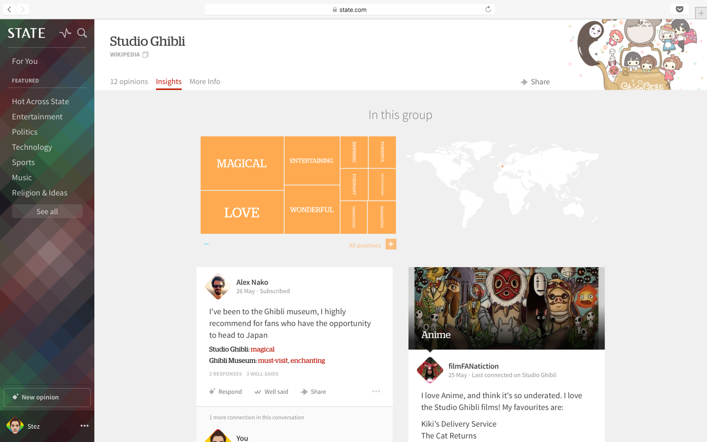
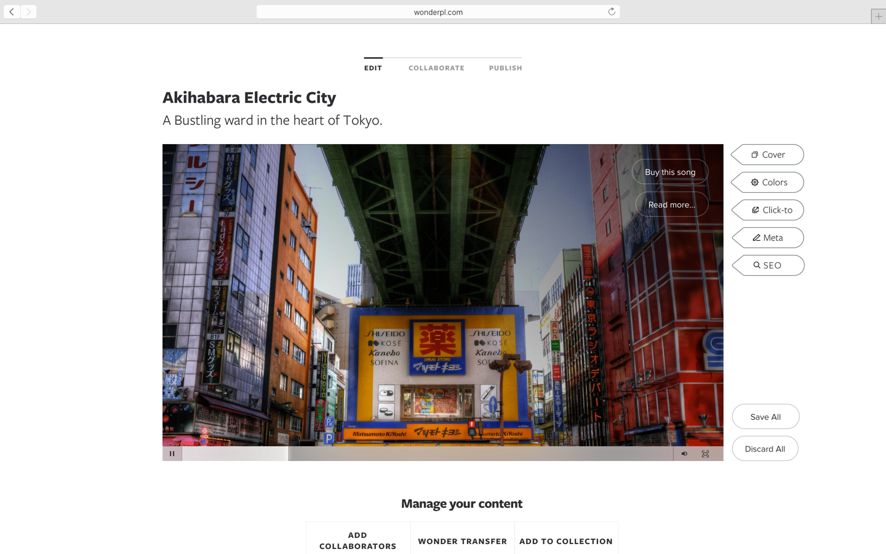
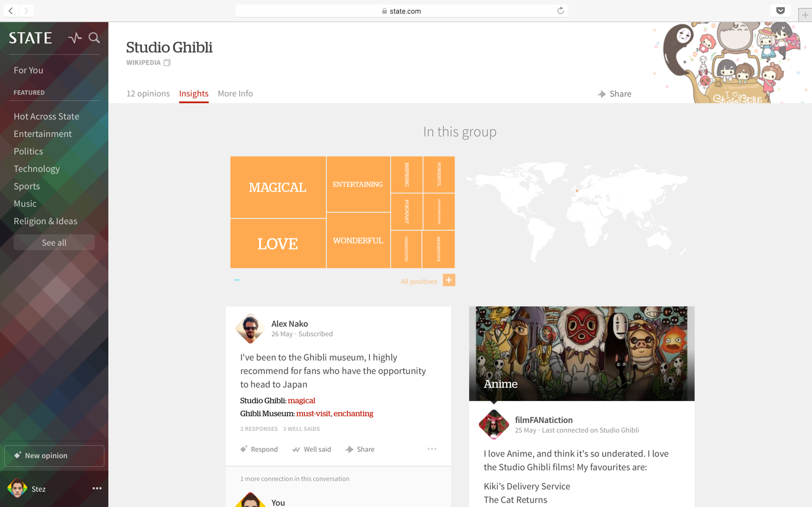
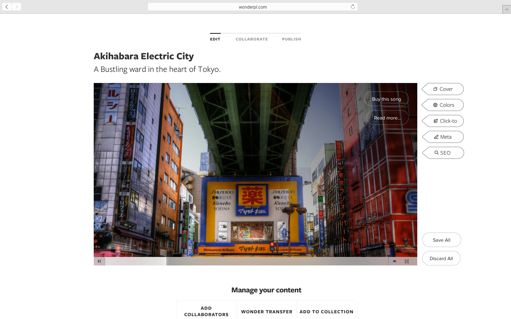

State
2014—2015 with Alex Nako


With the help and support of an incredible team, I helped craft and design the world's structured opinion network. State is able to find people who think similarly to you based on the semantic, decentralised and open web. State uses innovative and smart algorithms that shape your stream and bring you the most relevant opinions.


Introducing the Material Design language to the State Android app—including a new launcher icon—working closely with the Android dev team.


 


